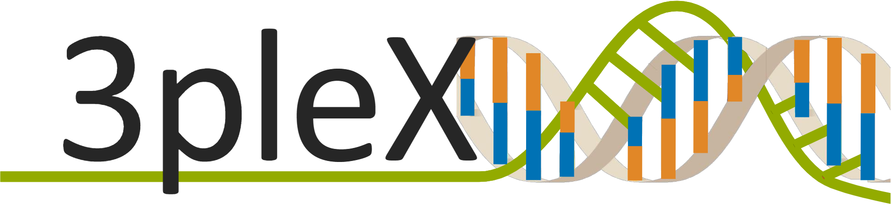

<div class="navbar">
    
    <div class="navbar-links">
        <a routerLink="/home"><button mat-button>Home</button></a>
        <a routerLink="/submit"><button mat-button>Send Job</button></a>
        <button mat-button [matMenuTriggerFor]="checkJob">Check job</button>
        <mat-menu #checkJob="matMenu">
            <button mat-menu-item (click)="openDialog('token')">Check by token</button>
            <button mat-menu-item (click)="openDialog('email')">Check by email</button>
        </mat-menu>
</div>